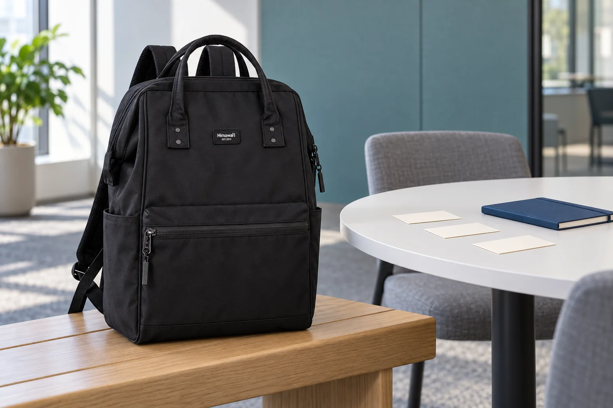

짧은 발표를 앞둔 백팩: 시작과 마무리 문장부터 챙기기

모임에서 잠깐 생각을 소개할 차례가 생겼습니다. 가방에 넣을 노트는 준비했는데, 어디서 말을 시작하고 어떻게 끝낼지는 아직 정하지 못했습니다. 내용을 더 보태기 전에 양 끝의 문장을 먼저 골라보세요. 발표 전체를 외우는 대신 듣는 사람에게 건넬 한 가지를 분명히 하는 준비입니다.
누구에게 무엇을 남길지 한 줄로
오늘 함께 앉을 사람과 이야기할 시간을 떠올립니다. 그 사람들이 이미 아는 설명은 줄이고, 발표를 듣고 기억했으면 하는 요점 하나를 적어보세요. 예를 들어 모임 장소를 바꾸자는 제안이라면 장소의 좋은 점을 전부 소개하기보다 바꾸려는 이유 한 가지부터 정할 수 있습니다. 이 문장은 나를 위한 준비 메모입니다. 실제로 하지 않은 조사나 다른 사람의 의견을 근거처럼 덧붙이지 않고, 확인이 필요한 내용은 따로 남깁니다.
첫 문장은 자리와 주제를 연결하기
처음부터 자료의 세부 항목을 읽기보다 지금 무엇을 이야기하려는지 자신의 말로 시작합니다. 인사를 길게 늘이거나 멋있는 인용문을 찾지 않아도 됩니다. 준비한 문장을 실제로 소리 내어 읽고, 한 번에 말하기 어려운 부분은 짧게 나눠보세요. 평소 쓰지 않는 단어를 더하는 것보다 자신이 이해하고 설명할 수 있는 표현을 고릅니다. 이 준비가 긴장을 없애거나 발표 결과를 보장하는 것은 아닙니다. 시작할 때 돌아볼 문장 하나를 정하는 정도로 생각하면 됩니다.
마지막에는 새 이야기 대신 요점으로 돌아오기
마무리 문장을 적을 때 앞에서 정한 요점을 다시 봅니다. 끝에 새로운 사례를 계속 붙이면 어디서 이야기가 끝나는지 모호해질 수 있습니다. 소개만 하는 자리라면 기억할 말을 짧게 남기고, 의견을 구하는 자리라면 무엇에 대해 함께 이야기하고 싶은지 질문 하나를 정해보세요. 시작과 끝을 이어 읽었을 때 같은 주제를 향하고 있는지도 확인합니다. 정해진 진행 방식이나 시간이 있다면 모임 안내에 맞춰 내용을 줄입니다.
메모를 펼친 상태로 한 번 연습하기
첫 문장, 이야기할 핵심 단어, 마무리 문장을 작은 카드나 노트에서 찾기 쉬운 순서로 놓습니다. 발표 자리에서 쓸 크기와 글씨로 적고 실제로 펼쳐 읽어보세요. 문장을 전부 적을지 핵심 단어만 남길지는 자신에게 맞게 고르면 됩니다. 출발할 때는 연습했던 메모와 다른 초안이 섞이지 않았는지 확인합니다. 사진의 No.1884는 검정 몸체와 손잡이 연결부, 앞면 지퍼 포켓을 실제 원본에 맞춘 연출입니다. 메모와 노트는 가방 곁에 놓았으며 내부 수납을 확인한 장면은 아닙니다.
참고·안내
- Himawari No.1884 제품 정보
- 실제 Himawari No.1884 블랙 원본과 제조사 카탈로그 1884L 외부 치수 30 × 45 × 20 cm를 참고한 AI 연출 사진입니다. 빈 메모 카드와 노트는 가상 소품이며 실제 발표 경험이나 수납 실측을 보여주지 않습니다.
자주 묻는 질문
발표 내용을 전부 외워야 하나요?
이 글은 암기를 요구하는 방법이 아닙니다. 시작과 마무리, 요점이 있는 위치를 정한 뒤 자신이 쓰기 편한 메모로 연습해보세요.
마지막 문장에 질문을 꼭 넣어야 하나요?
소개하는 자리와 의견을 구하는 자리는 다릅니다. 그날 모임의 목적에 맞춰 요점을 정리하거나 함께 이야기할 질문 하나를 고를 수 있습니다.